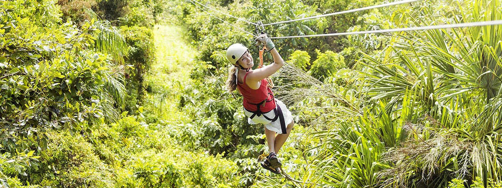
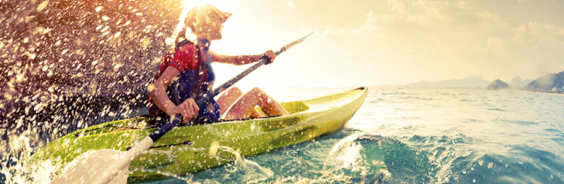

Vacaciones de Aventura
Equilibrar su necesidad de explorar nuevas áreas con todos los elementos de la planificación de viajes de aventura puede ser complicado. No importa su nivel de habilidad, hay opciones en abundancia.
¿Qué tipo de aventura estás buscando? Solo, amigos, familia? ¿Esquiar por montañas de polvo fresco, hacer tirolesas a través del dosel de la jungla, explorar las cuevas más grandes del mundo, navegar en kayak por sitios remotos del patrimonio mundial, o bucear en naufragios abandonados?
Ahí es donde los Líderes de Viajes pueden ayudar. Tenemos conocimiento local y conexiones globales para asegurarnos de que obtenga la aventura personalizada que busca, junto con el hotel perfecto para relajarse después de que la adrenalina se desvanezca.
¿Necesitas algunas ideas para empezar? Estas son solo algunas de las vacaciones de aventura que hemos planeado en todo el mundo.
Viajes de aventura basados en la montaña
- Heli-skiing en las Montañas Rocosas: caiga de un helicóptero en polvo virgen en las montañas remotas de las Montañas Rocosas canadienses.
- Montar a caballo en la Patagonia: galope a través de los espectaculares paisajes del imponente extremo sur de Sudamérica.
- Senderismo en los volcanes en Hawai: no hay mejor manera de presenciar el poder puro de un volcán que el senderismo en uno activo.
Viajes de aventura a base de agua
- Rafting en aguas bravas en el Gran Cañón: vea este espectacular paisaje desde una nueva perspectiva, navegue por los rápidos y haga una pausa para las excursiones de un día.
- Paseos en kayak por Nueva Zelanda: en Milford Sound, un sitio del patrimonio mundial, remarás junto a cascadas, impresionantes acantilados y curiosos pingüinos.
- Buceo en las Bahamas: esta isla paradisíaca es el hogar de naufragios naturales y artificiales y una abundancia de vida marina colorida.
Viajes de aventura basados en caminatas
- El Camino Inca: Acérquese a Machu Picchu como lo hicieron los Incas, rodeado de exuberantes paisajes montañosos y ruinas más pequeñas en el camino.
- Petra: disfruta de las caminatas por el cañón, duerme bajo las estrellas y visita una de las Siete Maravillas del Mundo en Jordania.
- Bibbulmun Track de Australia: Aborde un sinuoso sendero de 1.000 km a través de bosques y playas de arena.
Destinos de vacaciones de aventura
- Alaska: Explore la última frontera de Estados Unidos y acérquese a los glaciares en kayak, balsa, pie o incluso en trineo tirado por perros.
- Australia: Con su vasto interior, su terreno rocoso y sus hermosas playas, encontrará aventuras en todos los rincones, sin importar a dónde vaya.
- Costa Rica: en la tierra de bosques tropicales, volcanes y cascadas, el desafío aquí es elegir qué aventura probar primero: excursionismo, rafting, surf o tirolesa.
Cualquiera de nuestros expertos certificados en viajes de aventura que figuran a la derecha puede ayudarlo a planificar una escapada que sea solo su nivel de adrenalina y relajación.